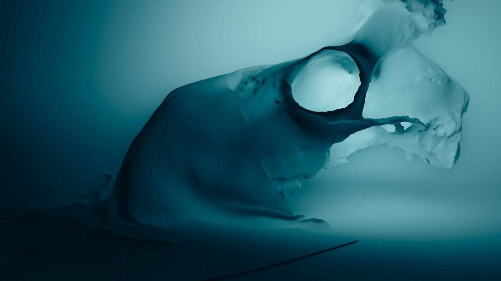

X-RayVault
X-RayVault
X-RayVault
X-RayVault
Home / Features
Five pillars that make X-Ray Vault feel like a diagnostic workstation you can slip into a coat pocket.
Every study is sealed with 256-bit AES the instant it lands on your device. Encryption keys are derived on-device and never transmitted, so your reads remain genuinely private.

Open DICOM series and standard images at full fidelity. Window-level, pan, zoom and cine scroll behave exactly as clinicians expect — tuned for touch.

Attach studies to searchable patient histories with modality tags, referral notes and dates — so context is always one tap from the image.

The full vault lives on the device, so a dropped signal never interrupts a read. Sync runs quietly in the background when you choose to connect.

Share a study with a colleague through an encrypted, expiring link you control — and pull it back at any moment. No study is ever exposed in plain text.

Browse the interface, then get the app on your device.